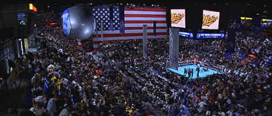

Paramount/1998/98m/WS 2.35
 |
More angles of thearena than you'd care to count©Paramount |
Rick Santoro is an obnoxious
Atlantic City police detective bringing his ugly shake down style to a heavyweight
championship fight. Santoro is so obvious he could have been wearing a suit sewn of Ben
Franklin greenbacks. He’s the poster boy of corruption. Santoro’s meeting his
straight-laced boyhood buddy Navy Commander Kevin Dunne, who just happens to be heading a
security detail protecting the US Secretary of Defense. All hell breaks loose when the
Secretary is taken down by a bullet. Yes, it’s Santoro to the rescue. Together with
Dunne, they close down the arena and track the perpetrators. Only it’s all too easy.
Throw in the sad elements of a crooked fight, a sportscaster hoping for his big break, a
hurricane battering the building, and the questionable test results of a new nuclear
missile and Snake Eyes is all over the place pasting together an absurd plot.
Santoro is played so far over the top by Nicolas Cage you might
suspect he’s trying to compete with DePalma’s excessive filmmaking style. He
brays like a donkey, acts like an ass and still ends up with the girl. Bad movies: go
figure. Gary Sinese plays Kevin Dunne so straight at the beginning he seems to be wearing
a flagpole somewhere on body. But Sinese loosens up as the plot self-explodes and does his
fare share of bad acting. Stan Shaw has some embarrassing moments as heavyweight champ
Lincoln Tyler.
Snakes Eyes suffers from excessive NTSC artifacts.
Straight jump around quicker than the boxers in the ring. The conference room scene is so
difficult to watch you can’t even focus on the dialogue. The table is almost as
animated as Cage. The image is very sharp and colors are vibrant. The transfer has more
punch than the fighters, that’s for sure. The crowd sequences are very loud making
dialogue a tad tough to discern. The Dolby Digital 5:1 Surround is quite good, though the
artificiality of some the punches is annoying.